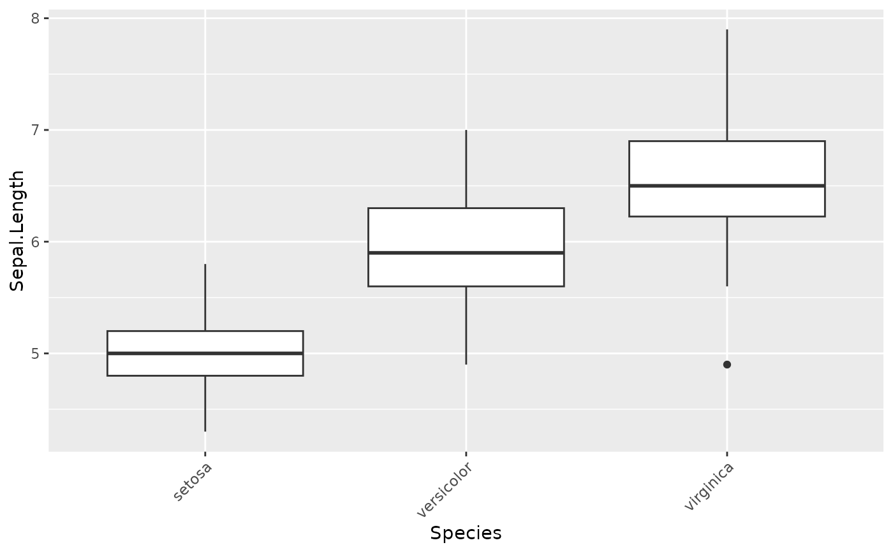
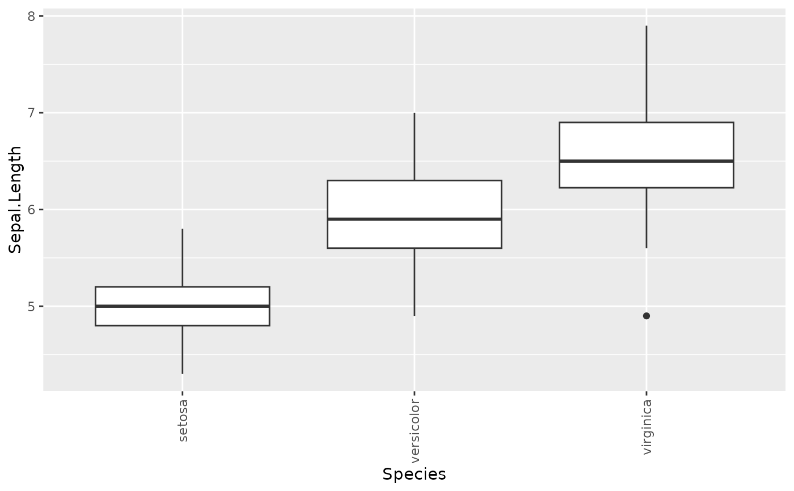
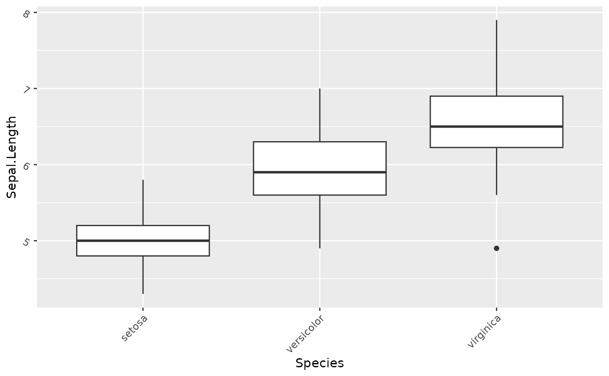
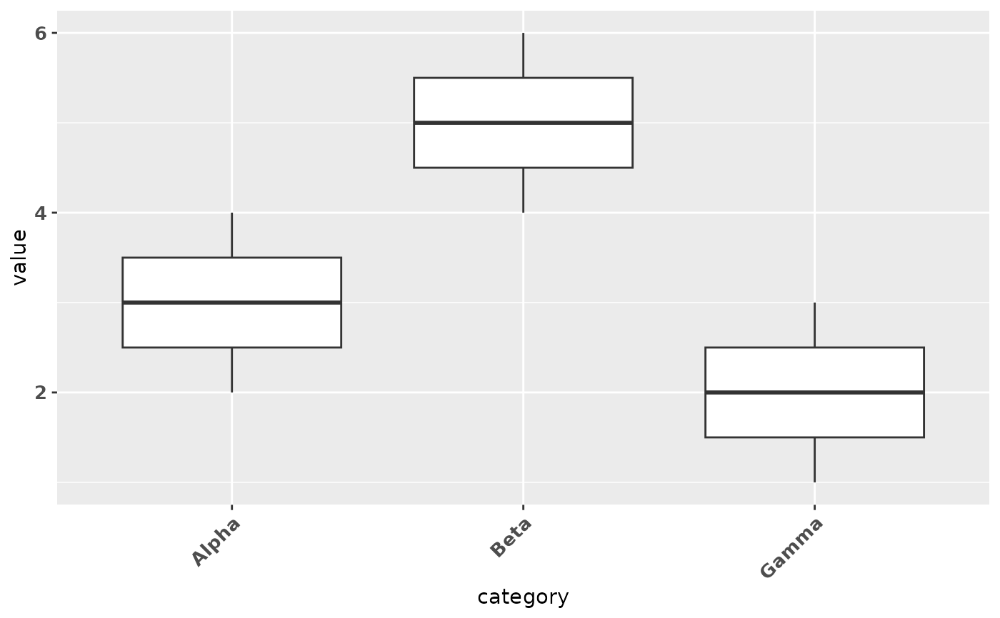
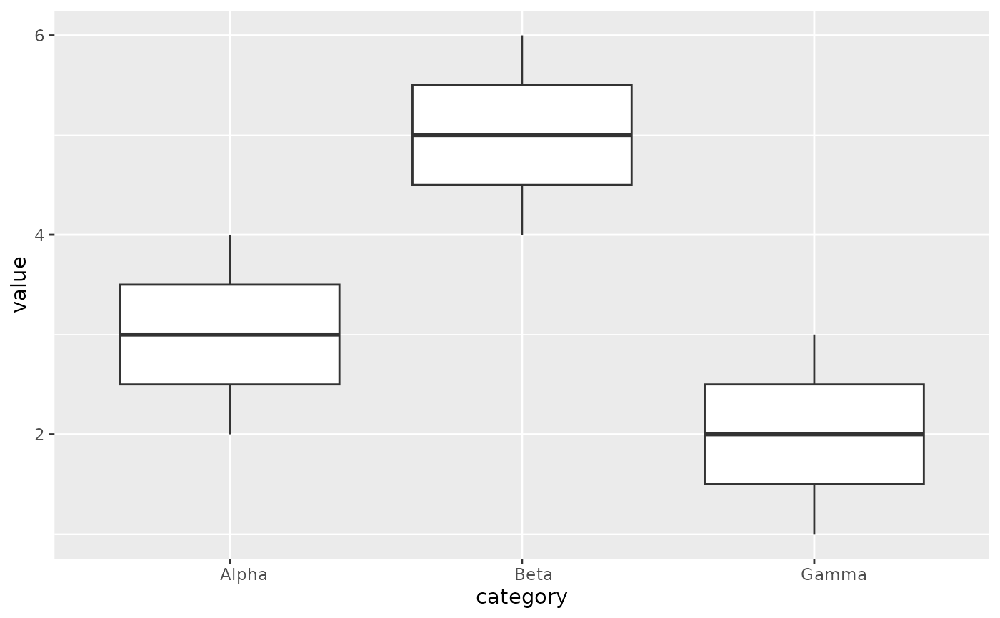
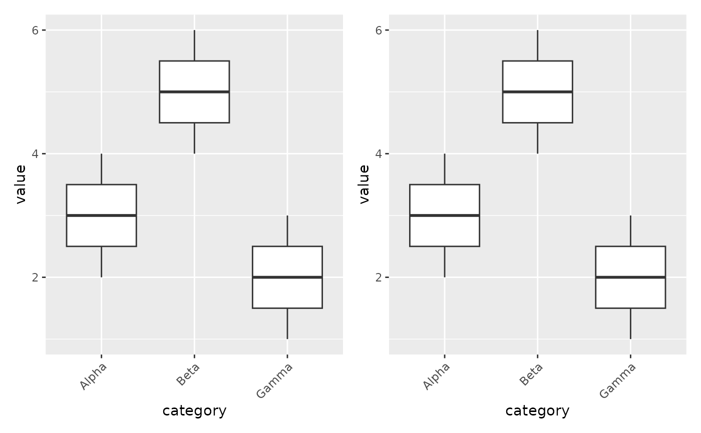
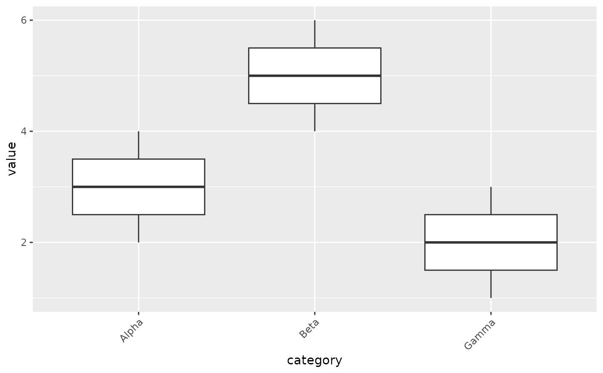

Rotate and style axis tick labels for X and/or Y axes. Inspired by
Seurat's RotatedAxis() but with independent control over both
axes, rotation angle, and text appearance.
Usage
fmt_axisText(
plot,
x = NULL,
y = NULL,
x_hjust = NULL,
x_vjust = NULL,
y_hjust = NULL,
y_vjust = NULL,
size = NULL,
color = NULL,
face = NULL,
...
)Arguments
- plot
A ggplot, patchwork, or list of ggplot objects.
- x
Finite numeric scalar. Rotation angle (degrees) for X-axis text. Common values:
45(diagonal),90(vertical). DefaultNULL(no change).- y
Finite numeric scalar. Rotation angle (degrees) for Y-axis text. Default
NULL(no change).- x_hjust
Finite numeric scalar. Horizontal justification for X-axis text. Can be set without supplying
x. DefaultNULL: automatic alignment follows the bottom or top axis side whenxis supplied; otherwise the existing alignment is retained.- x_vjust
Finite numeric scalar. Vertical justification for X-axis text. Can be set without supplying
x. DefaultNULL: automatic alignment follows the bottom or top axis side whenxis supplied; otherwise the existing alignment is retained.- y_hjust
Finite numeric scalar. Horizontal justification for Y-axis text. Can be set without supplying
y. DefaultNULL: automatic alignment follows the left or right axis side whenyis supplied; otherwise the existing alignment is retained.- y_vjust
Finite numeric scalar. Vertical justification for Y-axis text. Can be set without supplying
y. DefaultNULL: automatic alignment follows the left or right axis side whenyis supplied; otherwise the existing alignment is retained.- size
Non-negative finite numeric scalar. Text size in points for both axes, or
ggplot2::rel()relative to the parent axis text size. DefaultNULL(no change).- color
One valid R color or numeric palette index for both axes.
NAmakes text transparent. DefaultNULL(no change).- face
Character. Font face (
"plain","bold","italic","oblique","bold.italic"). DefaultNULL(no change).- ...
Additional arguments passed to
ggplot2::theme(), applied after the generated formatting. Explicit axis text fields in these arguments take precedence; side-specific fields take precedence over their parent.
Details
Data plots are edited recursively within nested patchworks and lists.
Layouts, annotations, list names and freed alignment are retained. Spacers,
guide areas, fixed wrapped graphics and inset overlays are not edited.
Styling also updates explicitly styled axis sides and radial text elements.
Explicitly blank side elements are retained.
Guide-local themes and rotation settings are updated without modifying the
original guides or their other settings. With justification alone, an
existing guide rotation is retained.
Guide formatting retains text classes inherited from the plot theme.
Existing text element classes, including rich text elements, are retained.
Automatic Cartesian alignment follows each rendered axis side and treats
full turns periodically. Explicit justification takes precedence.
Justification values may lie outside the usual 0–1 interval.
When every formatting argument is NULL and ... is empty, the validated
input object is returned unchanged without evaluating plot data.
See also
Other plot formatting:
fmt_axis(),
fmt_axisTile(),
fmt_bg(),
fmt_boxplot(),
fmt_com(),
fmt_expand(),
fmt_his(),
fmt_legend(),
fmt_panel(),
fmt_plot(),
fmt_plot_base(),
fmt_point(),
fmt_raster(),
fmt_ref(),
fmt_scale(),
fmt_strip(),
fmt_strip2(),
fmt_tag(),
fmt_text()
Examples
library(ggplot2)
dat <- data.frame(
category = factor(rep(c("Alpha", "Beta", "Gamma"), each = 3)),
value = c(2, 3, 4, 4, 5, 6, 1, 2, 3)
)
p <- ggplot(dat, aes(category, value)) + geom_boxplot()
# Rotate X-axis 45 degrees (like Seurat::RotatedAxis())
fmt_axisText(p, x = 45)

# Rotate X-axis 90 degrees (vertical)
fmt_axisText(p, x = 90)

# Rotate both axes
fmt_axisText(p, x = 45, y = -30)

# With custom size and bold
fmt_axisText(p, x = 45, size = 10, face = "bold")

# Adjust justification while retaining the existing angle
fmt_axisText(p, x_hjust = 0.2)

# Preserve a nested layout and named list
nested <- patchwork::wrap_plots(p, p, nrow = 1)
fmt_axisText(list(main = nested, detail = p), x = 45)
#> $main

#>
#> $detail

#>